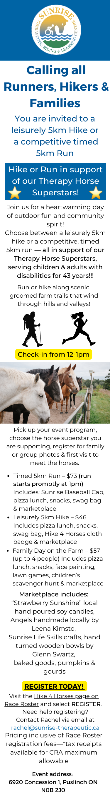

How to Reach Us
Call Us: (519) 837-0558
Email Us
Donate Now
Notable Upcoming Events & Camps
Hike 4 Horses

Our Location
6920 Concession 1, RR#2
Puslinch, ON NOB 2J0
Open in Maps
For more details on this event and our other programs, or to learn more about us
view our Full Website
(Best viewed on a desktop device.)